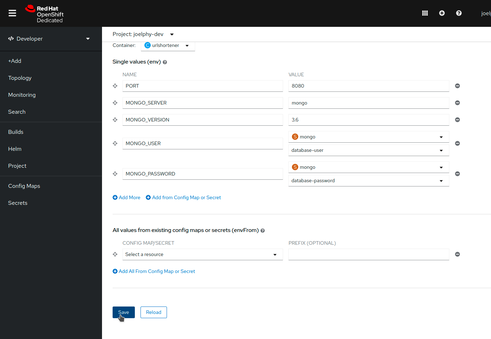

Add a Database
You now need to add a database to your application so you can store those links somewhere.
In the last sections, you saw how to create your container and deploy it and use s2i to build a container to be deployed. This time, we will use the application catalogue and pick a template to deploy on the cluster.
Deploy from the catalogue
From the left navigation bar, click on +Add. This brings up a menu with various options to add your application to the OpenShift cluster.
Choose "Database" to open up the developer catalogue filtered out for database templates. From this view, select the MongoDB (Ephemeral) card. A side panel should open. On this panel, click on the blue Instantiate Template button.
| This is an ephemeral template for MongoDB. When the pod restarts, all data is lost. This is ideal for development purposes but not so great for production. In the case of a production deployment, you will want to look into operator-backed templates. |
On the next screen, fill in the fields with the following values:
* Database Service Name: mongo
* MongoDB Connection Username: shorties
* MongoDB Connection Password: shorties
* MongoDB Database Name: urls
Then click on the blue "Create" button at the bottom.

OpenShift is now creating all the necessary components to deploy this database to your cluster. In a few seconds, you should see the application in the topology view with a blue ring indicating that it is running.

Use the UI to configure env variables
Now that the database started, it is time to configure the back-end to connect to it.
In the last section, you used the CLI to configure the environment variables. This time, you can stay in the comfort of the UI.
Click on the urlshortener deployment from the topology view. This will open up a side panel. In the Actions menu on the top right, select Edit Deployment.
From this new screen, select the Environment tab, and you should be back to the screen where you added the PORT earlier.
Click on "Add More" to add the following environment variables.
-
MONGO_SERVER:
mongo -
MONGO_VERSION:
3.6
For the user name and password, you can also use the Secret created by the MongoDB template.
Click on Add from Config Map or Secret, and use the name MONGO_USER. In the Select a resource dropdown, pick the Secret named mongo. In the Select a key dropdown, pick database-user.
Do the same for MONGO_PASSWORD, which maps to the database-password key.
Once you are done, click on the blue "Save" button at the bottom of the page.

Verify the application status
Now that the database component has been added and the back-end is configured, it’s time to test the application again.
If you open up the front-end and look at the About page, you should now see that the database is up and running.

You can now use the Add New page to create URL shortcuts, and you can see them on the "Current Shorties" page. All of this data is persisted if you refresh the page.
When clicking on the link icon, though, you get an error. This error is because the front-end is trying to contact a redirector service that hasn’t been deployed yet. This service will be added in the next section.